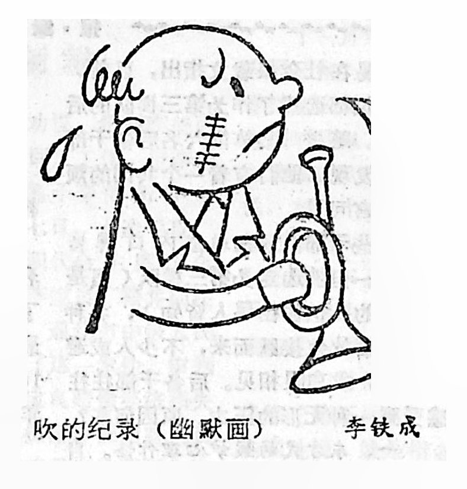

李铁成 《人事》1986年第1期（总第4期），第41页
吹的纪录
A Record in Blowing
- Description
- A sweating man blows a trumpet with all his might.
- Note
- 吹 means both 'to blow' and 'to brag'; 吹牛 is 'to boast'. The page labels it 幽默画 (humorous drawing).
- Artist
- Li Tiecheng 李铁成
- Published in
- 《人事》1986年第1期（总第4期）, p. 41
- Themes
- False reporting and boasting · Bureaucratism

Cite
Li Tiecheng, “吹的纪录” [A Record in Blowing], Renshi (Personnel) 《人事》, 1986, no. 1, p. 41.